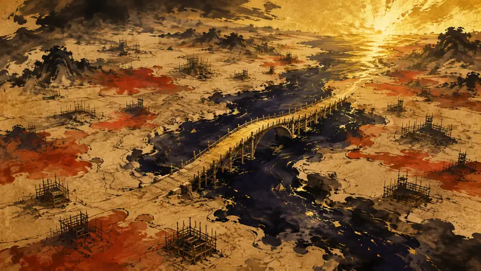

更正 《钢铁雄心 IV》大型资料片延期，Paradox改用新的发行方式（译）
更正：原摘要稱來源沒有提供新的推出日期或具體改動，實際上來源已列出 9 月 17 日的 1.19.3 更新內容、後續修補與 Expansion Pass 順延安排，並指出延後起因是 Thunder at our Gates 在 Steam 有 70% 負評。
展开完整说明（1 段）
已改寫摘要與鉤子。
四語版本依繁中更正內容同步重譯（發布後複核）。
先鸦｜黎明快讯
玩家能动性：政策如何限制它、产业如何塑造它、叙事设计如何实现它。

Paradox宣布推迟《钢铁雄心 IV》的下一款大型资料片，理由是需要更多时间进行打磨。上一款付费资料片Thunder at our Gates在Steam获得了70%的差评，之前几款DLC也因错误过多，以及将本应随免费更新推出的浅层内容拿来收费，而受到玩家批评。官方表示，介绍新DLC的开发日志会比往年更早开始，以便尽早收集玩家反馈；Thunder at our Gates的收尾更新则会按原定时间推出。后续规划为：9月17日推出1.19.3更新，新增澳大利亚密径以及印度尼西亚、暹罗内容；罗马尼亚内容之后推出减少点击次数与信息负担的修补；下一款Expansion Pass（暗示以美国为主）顺延到上述内容之后。
来源：Gry-Online.pl
更正：原摘要稱來源沒有提供新的推出日期或具體改動，實際上來源已列出 9 月 17 日的 1.19.3 更新內容、後續修補與 Expansion Pass 順延安排，並指出延後起因是 Thunder at our Gates 在 Steam 有 70% 負評。
已改寫摘要與鉤子。
四語版本依繁中更正內容同步重譯（發布後複核）。
先鸦观点
延期会打乱玩家安排战役与扩充内容的时间，但长期支援一款游戏最怕的是把固定更新节奏当成必须履行的承诺。玩家真正需要的是能自行决定何时回来，而不是被不成熟的内容周期牵着走。
本段为 AI 产出的观点，自动发布，人工于发布后复核。